Series Temporales: Procesos ARIMA con estacionalidad
Máster de Bioestadística (Modelización Estadística)
Iván Arribas (Depto. Análisis Económico. Universitat de València)
1 Introducción
En general, la capacidad de toma de datos posibilita que el fechado de las series sea inferior al año, apareciendo la componente estacional. No es difícil disponer de series mensuales, trimestrales, diarias o incluso con frecuencia superior.
En este tema se revisan los conocimientos del tema previo, ampliándolos a fin de contemplar la presencia de estacionalidad en las series temporales
Se mantienen las hipótesis sobre el proceso generador de datos (estacionario y ergódico) y el vector de residuos (ruido blanco).
Recuerda que \(m\) es el orden estacional.
2 Procesos ARIMA con estacionalidad
2.1 Procesos autorregresivos \(AR_m(P)\)
Definición
El modelo general autorregresivo estacional de orden P, \(y_t \sim AR_m(P)\) viene definido por \[y_t=c + \phi_m y_{t-m} + \phi_{2m} y_{t-2m} + \ldots + \phi_{Pm} y_{t-Pm} + \varepsilon_t,\] que usando el operador retardo queda \[(1 - \phi_m L^m - \phi_{2m} L^{2m} - \ldots - \phi_{Pm} L^{Pm})y_t = c + \varepsilon_t.\]
Propiedades
El proceso es estacionario si quedan fuera del círculo de radio unidad todas las raíces del polinomio \[\Phi_P(z) = 1 - \phi_m z^m - \phi_{2m} z^{2m} - \ldots - \phi_{Pm} z^{Pm}.\]
Es invertible siempre.
Sobre todo,
- En la FAC las autocorrelaciones de orden múltiplo de m \((m,2m,\ldots)\) decaen exponencialmente a partir del orden P.
- En la FACP las autocorrelaciones parciales de orden múltiplo de m verifican que los P primeros valores son no nulos y todos los demás valen cero.
Ejemplos
- \(y_t \sim AR_{12}(1):\;\;y_t = c + \phi_{12} y_{t-12} + \varepsilon_t\) o \((1 - \phi_{12} L^{12})y_t = c + \varepsilon_t\)
- \(y_t \sim AR_7(2):\;\;y_t = c + \phi_7 y_{t-7} + \phi_{14} y_{t-14} + \varepsilon_t\) o \((1 - \phi_7 L^7 - \phi_{14} L^{14})y_t = c + \varepsilon_t\)
Simulaciones de procesos autorregresivos \(AR_m(P)\)
La figura 1 muestran una simulación del proceso \(AR_{4}(2)\) \(y_t = 0.7y_{t-4} - 0.7y_{t-8} + \varepsilon_t\), y la figura 2 simula el proceso \(AR_{12}(1)\) \(y_t = 0.6y_{t-12} + \varepsilon_t\). En ambos casos la muestra es de tamaño 500 y \(\varepsilon_t\) se distribuye como una normal con media cero y varianza la unidad. (Todas las simulaciones se han realizado con la función arima.sim de la librería stats.)
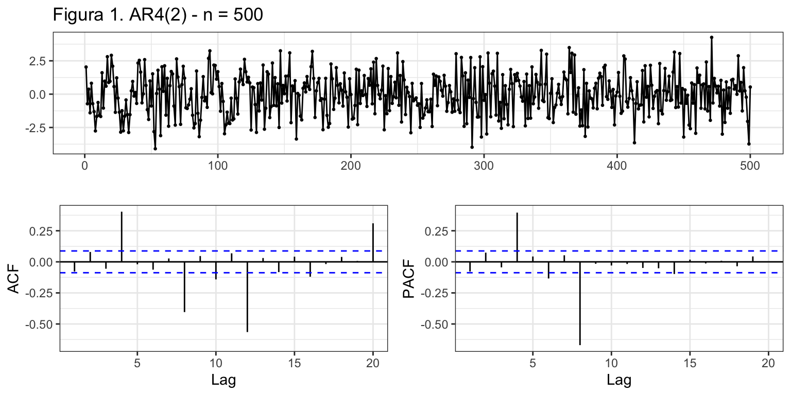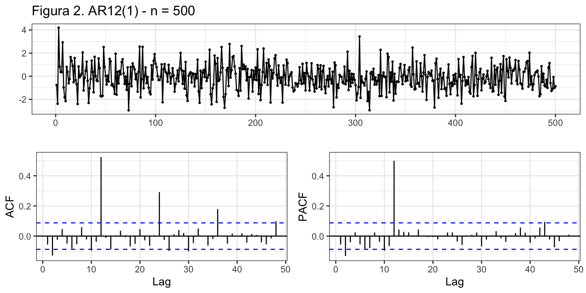
2.2 Procesos en medias móviles \(MA_m(Q)\)
Definición
El modelo general en medias móviles estacional de orden Q, \(y_t \sim MA_m(Q)\) viene definido por \[y_t=c + \varepsilon_t + \theta_m \varepsilon_{t-m} + \theta_{2m} \varepsilon_{t-2m} + \ldots + \theta_{Qm} \varepsilon_{t-Qm},\] que usando el operador retardo queda \[y_t = c + (1 + \theta_m L^m + \theta_{2m} L^{2m} + \ldots + \theta_{Qm} L^{Qm}) \varepsilon_t.\]
Propiedades
El proceso es invertible si quedan fuera del círculo de radio unidad todas las raíces del polinomio \[\Theta_Q(z) = 1 + \theta_m z^m + \theta_{2m} z^{2m} + \ldots + \theta_{Qm} z^{Qm}.\]
Es estacionario siempre.
Sobre todo,
- En la FAC las autocorrelaciones de orden múltiplo de m verifican que los Q primeros valores son no nulos y todos los demás valen cero.
- En la FACP las autocorrelaciones parciales de orden múltiplo de m decaen exponencialmente a partir del orden Q.
Ejemplos
- \(y_t \sim MA_7(1):\;\;y_t = c + \varepsilon_t + \theta_7 \varepsilon_{t-7}\) o \(y_t = c + (1 + \theta_7 L^7)\varepsilon_t\)
- \(y_t \sim MA_{12}(2):\;\;y_t=c + \varepsilon_t + \theta_{12} \varepsilon_{t-12} + \theta_{24} \varepsilon_{t-24}\) o \(y_t = c + (1 + \theta_{12} L^{12} + \theta_{24} L^{24})\varepsilon_t\)
Simulaciones de procesos en medias móviles \(MA_m(Q)\)
La figura 3 muestra una simulación del proceso \(MA_{4}(2)\) \(y_t = 0.7\varepsilon_{t-4} - 0.7\varepsilon_{t-8} + \varepsilon_t\), y la figura 4 simula el proceso \(MA_{12}(1)\) \(y_t = 0.6\varepsilon_{t-12} + \varepsilon_t\). En ambos casos la muestra es de tamaño 500 y \(\varepsilon_t\) se distribuye como una normal con media cero y varianza la unidad.
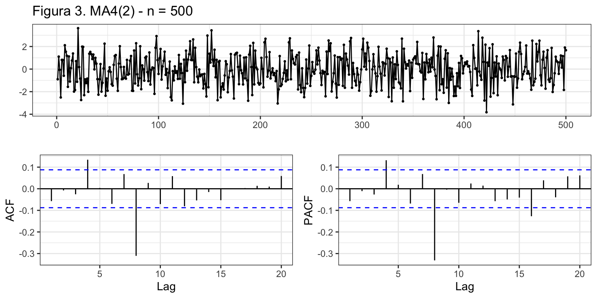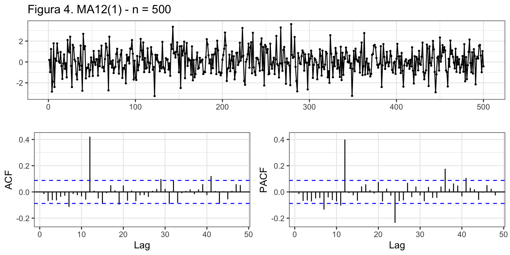
2.3 Procesos \(ARMA_m(P,Q)\)
Definición
El modelo general \(y_t \sim ARMA_m(P,Q)\) viene definido por \[ y_t = c + \phi_m y_{t-m} + \phi_{2m} y_{t-2m} + \ldots + \phi_{Pm} y_{t-Pm} + \varepsilon_t + \theta_m \varepsilon_{t-m} + \theta_{2m} \varepsilon_{t-2m} + \ldots + \theta_{Qm} \varepsilon_{t-Qm},\] que usando el operador retardo queda \[(1 - \phi_m L^m - \ldots - \phi_{Pm} L^{Pm})y_t = c + (1 + \theta_m L^m + \ldots + \theta_{Qm} L^{Qm}) \varepsilon_t.\]
El proceso más simple es el \(ARMA_m(1,1)\): \(y_t = c + \phi_m y_{t-m} + \theta_m \varepsilon_{t-m} + \varepsilon_{t}.\)
Propiedades
El proceso es estacionario si quedan fuera del círculo de radio unidad todas las raíces del polinomio \[\Phi_P(z) = 1 - \phi_m z^m - \phi_{2m} z^{2m} - \ldots - \phi_{Pm} z^{Pm}.\]
El proceso es invertible si quedan fuera del círculo de radio unidad todas las raíces del polinomio \[\Theta_Q(z) = 1 + \theta_m z^m + \theta_{2m} z^{2m} + \ldots + \theta_{Qm} z^{Qm}.\]
Sobre todo,
- En la FAC las autocorrelaciones de orden múltiplo de m decaen exponencialmente a partir del orden P.
- En la FACP las autocorrelaciones parciales de orden múltiplo de m decaen exponencialmente a partir del orden Q.
Ejemplos
- \(y_t \sim ARMA_7(1, 1):\;\;y_t = c + \phi_7 y_{t-7} + \theta_7 \varepsilon_{t-7} + \varepsilon_{t}\) o \((1 - \phi_7 L^7)y_t = c + (1 + \theta_7 L^7)\varepsilon_t\).
- \(y_t \sim ARMA_{12}(1, 1):\;\;y_t = c + \phi_{12} y_{t-12} + \theta_{12} \varepsilon_{t-12} + \varepsilon_{t}\) o \((1 - \phi_{12} L^{12})y_t = c + (1 + \theta_{12} L^{12})\varepsilon_t\).
Simulación de un proceso \(ARMA_m(P,Q)\)
La figura 5 muestra una simulación de tamaño 500 para el proceso \(ARMA_7(1,1)\) \(y_t = 0.7y_{t-7} - 0.5\varepsilon_{t-7} + \varepsilon_t\).
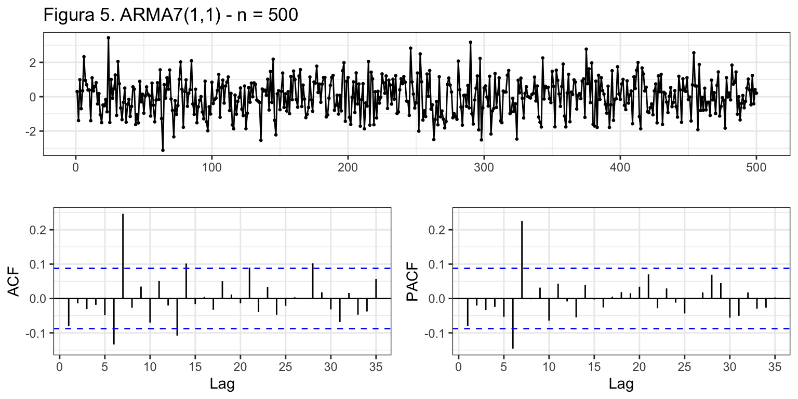
2.4 Procesos \(ARIMA_m(P,D,Q)\)
Si la serie \(y_t\) no es estacionaria en su parte estacional, pero tras diferenciarla \(D\) veces se hace estacionaria, diremos que la serie es integrada estacionalmente de orden \(D\): \(y_t \sim I_m(D)\). Por tanto,
- una serie estacionaria estacionalmente se indicará como \(y_t \sim I_m(0)\).
- \(y_t \sim I_m(1)\) es equivalente a \(\nabla_m y_t = (1 - L^m)y_t \sim I_m(0)\)
Una serie \(y_t\) sigue un proceso \(ARIMA_m(P,D,Q)\) si:
- \(y_t \sim I_m(D)\) (hay que diferenciarla estacionalmente \(D\) veces para hacerla estacionaria), y
- \(\nabla_m^D y_t \sim ARMA_m(P,Q)\).
Entonces, podemos escribir \(y_t \sim ARIMA_m(P,D,Q)\) como \[\begin{equation*} \begin{array}{c@{\quad}ccc} (1 - \phi_m L^m - \ldots - \phi_{Pm} L^{Pm}) & (1- L^m)^D y_t & = & c + (1 + \theta_m L^m + \ldots + \theta_{Qm} L^{Qm}) \varepsilon_t \\ \uparrow & \uparrow & & \uparrow \\ AR_m(P) & I_m(D) & & MA_m(Q) \end{array} \end{equation*}\]
Ejemplo
\(y_t \sim ARIMA_{12}(1, 1, 1):\;\;(1 - \phi_{12} L^{12})(1- L^{12}) y_t = c + (1 + \theta_{12} L^{12}) \varepsilon_t\) o
\(y_t = c + y_{t-12} + \phi_{12}(y_{t-12} - y_{t-24}) + \theta_{12} \varepsilon_{t-12} + \varepsilon_t\).
2.5 Proceso \(ARIMA_m(p,d,q)(P,D,Q)\)
La realidad nos muestra que la mayoría de las series con estacionalidad se ajustan a una combinación de procesos regulares y estacionales.
El proceso \(ARIMA_m(p, d, q)(P, D, Q)\) puede ser expresado de forma abreviada como \[\Phi_p(L)\Phi_P(L^m)\nabla^d\nabla_m^D y_t = c + \Theta_q(L)\Theta_Q(L^m)\varepsilon_t,\]
o menos sucintamente como \[\begin{equation*}
\begin{array}{ccccc}
AR(p) & AR_m(P) & I(d) & I_m(D) & \\
\downarrow & \downarrow & \downarrow & \downarrow & \\
(1 - \phi_1 L - \ldots - \phi_p L^p) & (1 - \phi_m L^m - \ldots - \phi_{Pm} L^{Pm}) & (1 - L)^d & (1- L^m)^Dy_t & = \\
c + (1 + \theta_1 L + \ldots + \theta_q L^q) & (1 + \theta_m L^m + \ldots + \theta_{Qm} L^{Qm}) \varepsilon_t & & & \\
\uparrow & \uparrow & & & \\
MA(q) & MA_m(Q) & & &
\end{array}
\end{equation*}\]
\[ (1 - \phi_1 L - ... - \phi_p L^p)(1 - \phi_m L^m - ... - \phi_{Pm} L^{Pm})(1- L^m)^D(1 - L)^d y_t = \] \[c + (1 + \theta_1 L + ... + \theta_q L^q)(1 + \theta_m L^m + ... + \theta_{Qm} L^{Qm}) \varepsilon_t\]
Por ejemplo, entre las series mensuales uno de los procesos más comunes es \(ARIMA_{12}(0, 1, 1)(0, 1, 1)\), denominado modelo de las aerolíneas por ser el PGD de muchas series mensuales de transporte de pasajeros, en concreto la serie mensual de pasajeros de avión. La ecuación de este modelo es
\[(1-L)(1-L^{12})y_t = (1+ \theta_1L)(1 + \theta_{12}L^{12})\varepsilon_t\] que si desarrollamos queda \[y_t = y_{t-1} + (y_{t-12} - y_{t-13}) + \theta_1 \varepsilon_{t-1} + \theta_{12} \varepsilon_{t-12} + \theta_{13} \varepsilon_{t-13} + \varepsilon_t \]
- El número de pasajeros del mes \(t\) es el mismo que el del mes previo \(t-1\), más la diferencia entre estos meses observada el año pasado.
- Si en los meses usados para la predicción (\(t-1\), \(t-12\) y \(t-12\)) ha ocurrido algo extraordinario, hay que tenerlo en cuenta a la hora de afinar la predicción.
Simulaciones de un proceso \(ARIMA_m(p,d,q)(P,D,Q)\)
La figura 6 muestra una simulación de tamaño 1000 para el modelo de las aerolíneas, donde se ha supuesto que \(\theta_1=0.7\) y \(\theta_{12}=-0.5\).

3 Ejemplos
3.1 Nacimientos
Vamos a aplicar la metodología de Box-Jenkins a la serie de nacimientos en España desde el año 2000 (véase figura 7).
nacimientos <- read.csv2("./series/nacimientos.csv", header = TRUE)
nacimientos <- ts(nacimientos[, 2],
start = c(1975, 1),
freq = 12)
nacimientos <- window(nacimientos, start = 2000)
autoplot(nacimientos,
xlab = "",
ylab = "Nacimientos",
main = "Figura 7. Nacimientos en España")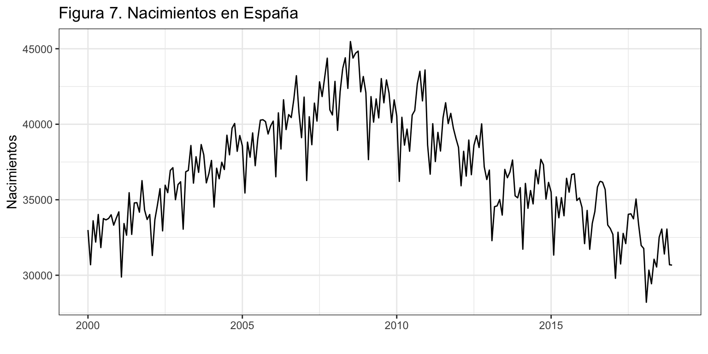
Transformación de la serie
Ya vimos en el Tema 3 que para que la serie sea estacionaria y ergódica había que diferenciarla tanto regular como estacionalmente (d = D = 1). Además, trabajaremos con el logaritmo de la serie para reducir la posible heterocedasticidad y ganar en interpretabilidad. Es decir, trabajaremos con la siguiente serie transformada \[\nabla\nabla_{12}\log(nacimientos_t) \sim I(0)I_{12}(0).\]
Identificación
Tras transformar la serie, vamos a identificar los valores de \(p\), \(q\), \(P\) y \(Q\) a partir de la FAC y la FACP.
ggtsdisplay(diff(diff(log(nacimientos), lag = 12)), lag = 48,
main = "Figura 8. FAC y FACP para Nacimientos")
Analizando la FAC y la FACP podemos pensar que:
- FAC: decrecimiento en la parte regular y estacional
- FACP: dos autocorrelaciones fuera del IC(95%) en la parte regular (\(r_1\) y \(r_2\)) y otras dos en la parte estacional (\(r_{12}\) y \(r_{24}\)).
Pero sobre todo, observamos que no es fácil la identificación.
¿Qué nos indica auto.arima? Primero vamos a generar e incluir en el proceso de auto-identificación las variables asociadas a los efectos de intervención que hemos detectado en los temas previos. En concreto, hemos visto que el número de días del mes explica el número de nacimientos. Este efecto era muy claro para los meses de febrero bisiestos. Para el calculo de la variable que recoge el número de días del mes usaremos la función monthdays de la librería forecast que devuelve el número de días de cada mes o trimestre de una serie.
monthdays(nacimientos) Jan Feb Mar Apr May Jun Jul Aug Sep Oct Nov Dec
2014 31 28 31 30 31 30 31 31 30 31 30 31
2015 31 28 31 30 31 30 31 31 30 31 30 31
2016 31 29 31 30 31 30 31 31 30 31 30 31
2017 31 28 31 30 31 30 31 31 30 31 30 31
2018 31 28 31 30 31 30 31 31 30 31 30 31Por otro lado, los periodos vacacionales pueden afectar la programación de las cesáreas e influir en el número de nacimientos. Como la Semana Santa es un periodo festivo que puede caer en marzo y abril, dependiendo del año, los nacimientos en estos dos meses pueden variar si recae en ellos la Semana Santa. Para capturar este efecto, usaremos la función easter de la librería forecast que devuelve para cada mes la proporción de días de la Semana santa que contiene (considerando solo del Viernes Santo al Domingo de Resurrección, tres días).
easter(nacimientos) Jan Feb Mar Apr May Jun Jul Aug Sep Oct Nov Dec
2014 0.00 0.00 0.00 1.00 0.00 0.00 0.00 0.00 0.00 0.00 0.00 0.00
2015 0.00 0.00 0.00 1.00 0.00 0.00 0.00 0.00 0.00 0.00 0.00 0.00
2016 0.00 0.00 1.00 0.00 0.00 0.00 0.00 0.00 0.00 0.00 0.00 0.00
2017 0.00 0.00 0.00 1.00 0.00 0.00 0.00 0.00 0.00 0.00 0.00 0.00
2018 0.00 0.00 0.67 0.33 0.00 0.00 0.00 0.00 0.00 0.00 0.00 0.00Además, en enero de 2011 el número de nacimientos era atípico.
DiasMes <- monthdays(nacimientos)
SemanaSanta <- easter(nacimientos)
d0111 <- 1*(cycle(nacimientos) == 1 & trunc(time(nacimientos)) == 2011)
auto.arima(nacimientos,
d = 1,
D = 1,
lambda = 0,
xreg = cbind(DiasMes, SemanaSanta, d0111))Series: nacimientos
Regression with ARIMA(0,1,1)(0,1,2)[12] errors
Box Cox transformation: lambda= 0
Coefficients:
ma1 sma1 sma2 DiasMes SemanaSanta d0111
-0.4445 -0.6042 -0.1716 0.0346 -0.0171 -0.0695
s.e. 0.0684 0.0713 0.0689 0.0079 0.0048 0.0165
sigma^2 estimated as 0.0004471: log likelihood=523.37
AIC=-1032.75 AICc=-1032.21 BIC=-1009.15Indica \(ARIMA_{12}(0,1,1)(0,1,2)\), aunque no está claro si coeficiente sma2 es significativo (su valor a penas supera los dos errores estándar).
Una alternativa a auto.arima es la función seas de la librería seasonal. La función seas tiene como ventajas que también analiza la conveniencia de usar la transformación logarítmica, que identifica posibles efectos calendario y valores extremos, y que suele ser más parsimoniosa que auto.arima. Su desventaja es que sólo se puede aplicar para series mensuales o trimestrales. Veamos que identificación ofrece seas:
summary(seas(nacimientos))
Call:
seas(x = nacimientos)
Coefficients:
Estimate Std. Error z value Pr(>|z|)
Weekday 0.0027529 0.0002808 9.803 < 0.0000000000000002 ***
Easter[1] -0.0137391 0.0039427 -3.485 0.000493 ***
AO2010.Dec 0.0657540 0.0136111 4.831 0.0000013590 ***
MA-Nonseasonal-01 0.3437010 0.0630616 5.450 0.0000000503 ***
MA-Seasonal-12 0.7436591 0.0505710 14.705 < 0.0000000000000002 ***
---
Signif. codes: 0 '***' 0.001 '**' 0.01 '*' 0.05 '.' 0.1 ' ' 1
SEATS adj. ARIMA: (0 1 1)(0 1 1) Obs.: 228 Transform: log
AICc: 3421, BIC: 3441 QS (no seasonality in final): 0
Box-Ljung (no autocorr.): 25.19 Shapiro (normality): 0.9927
Messages generated by X-13:
Warnings:
- At least one visually significant trading day peak has been
found in one or more of the estimated spectra.En primer lugar, la función identifica el modelo de las aerolíneas para la transformación logarítmica de Nacimientos. Este resultado está en consonancia con el alcanzado con la función auto.arima. Además, identifica un valor extremo en diciembre de 2010, un efecto calendario Semana Santa y un efecto calendario días laborables del mes (que podemos entender similar a nuestro efecto días del mes).
Tras estos análisis alternativos, concluimos que la identificación de partida es \(ARIMA_{12}(0,1,1)(0,1,2)+AI\), \[(1 - L^{12})(1 - L)\log(nacimientos_t) = (1 + \theta_1 L)(1 + \theta_{12} L^{12} + \theta_{24} L^{24})\varepsilon_t + AI.\] donde AI recoge todas las variables de intervención.
Estimación (y valores extremos)
Vamos a estimar el modelo identificado, incluidas las variables de intervención.
d1210 <- 1*(cycle(nacimientos) == 12 & trunc(time(nacimientos)) == 2010)
nac.ar1 <- Arima(nacimientos,
order = c(0, 1, 1),
seasonal = c(0, 1, 2),
lambda = 0,
xreg = cbind(DiasMes, SemanaSanta, d1210, d0111))
nac.ar1Series: nacimientos
Regression with ARIMA(0,1,1)(0,1,2)[12] errors
Box Cox transformation: lambda= 0
Coefficients:
ma1 sma1 sma2 DiasMes SemanaSanta d1210 d0111
-0.4742 -0.6144 -0.1505 0.0335 -0.0172 0.0576 -0.0533
s.e. 0.0668 0.0740 0.0724 0.0078 0.0047 0.0169 0.0167
sigma^2 estimated as 0.0004267: log likelihood=529.16
AIC=-1042.32 AICc=-1041.62 BIC=-1015.35Ya tenemos un modelo de partida, veamos si es necesaria más intervención.
error <- residuals(nac.ar1)
sderror <- sd(error)
autoplot(error, series="Error",
colour = "black",
xlab = "",
ylab = "Error",
main = "Figura 9. Error + Intervención") +
geom_hline(yintercept = c(-3, -2,2, 3)*sderror,
colour = c("red", "green", "green", "red"),
lty = 2) +
scale_x_continuous(breaks= seq(2000, 2018, 2)) 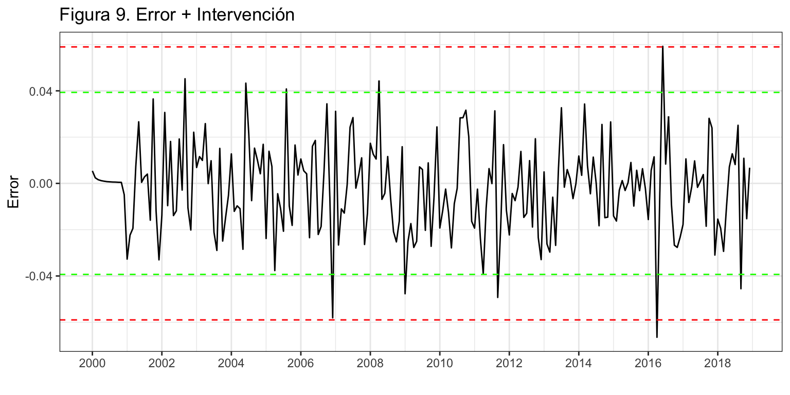
Se observa que hay tres candidatos a valores atípicos en diciembre 2006, abril de 2016 y junio de 2016, dado que los errores asociados se acercan o superan las 3 desviaciones típicas. Por tanto,
- Se crea una variable de intervención para cada caso
- Se estima de nuevo el modelo incluyendo estas variables
- Se vuelve a analizar si quedan valores atípicos
d1206 <- 1*(cycle(nacimientos) == 12 & trunc(time(nacimientos)) == 2006)
d0416 <- 1*(cycle(nacimientos) == 4 & trunc(time(nacimientos)) == 2016)
d0616 <- 1*(cycle(nacimientos) == 6 & trunc(time(nacimientos)) == 2016)
nac.ar2 <- Arima(nacimientos,
order = c(0,1,1),
seasonal = c(0, 1, 2),
lambda = 0,
xreg = cbind(DiasMes, SemanaSanta, d1206, d1210, d0111, d0416, d0616))
nac.ar2Series: nacimientos
Regression with ARIMA(0,1,1)(0,1,2)[12] errors
Box Cox transformation: lambda= 0
Coefficients:
ma1 sma1 sma2 DiasMes SemanaSanta d1206 d1210 d0111
-0.4277 -0.6321 -0.1422 0.0325 -0.0221 -0.0408 0.0549 -0.0546
s.e. 0.0714 0.0759 0.0752 0.0074 0.0047 0.0156 0.0160 0.0158
d0416 d0616
-0.0509 0.0274
s.e. 0.0162 0.0154
sigma^2 estimated as 0.0003934: log likelihood=539.41
AIC=-1056.83 AICc=-1055.53 BIC=-1019.75error <- residuals(nac.ar2)
sderror <- sd(error)
autoplot(error, series="Error",
colour = "black",
xlab = "",
ylab = "Error",
main = "Figura 10. Error + Intervención") +
geom_hline(yintercept = c(-3, -2, 2, 3)*sderror,
colour = c("red", "green", "green", "red"),
lty = 2) +
scale_x_continuous(breaks= seq(2000, 2018, 2)) 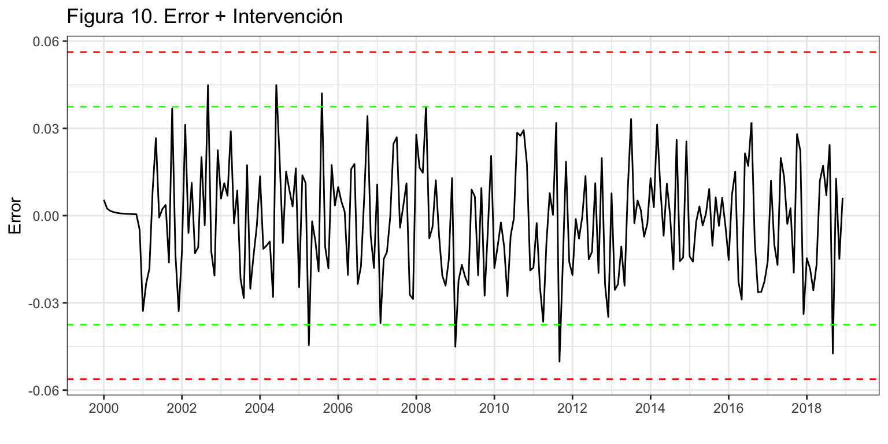
Es posible que alguno de los errores más elevados corresponda a un intervención, pero a fin de no alargar este ejemplo vamos a asumir que ya no hay valores extremos.
Por último, veamos si todos los coeficientes del modelo son significativos. Para ello, aplicamos la prueba de Wald.
ancho <- max(nchar(names(coef(nac.ar2)))) + 2
for(i in 1:length(coef(nac.ar2))) {
wt <- wald.test(b = coef(nac.ar2),
Sigma = vcov(nac.ar2),
Terms = i)
cat("\nCoeficiente: ", format(names(coef(nac.ar2))[i], width = ancho), "valor de p: ",
formatC(wt$result$chi2[3], digits = 4, format = "f"))
}
Coeficiente: ma1 valor de p: 0.0000
Coeficiente: sma1 valor de p: 0.0000
Coeficiente: sma2 valor de p: 0.0586
Coeficiente: DiasMes valor de p: 0.0000
Coeficiente: SemanaSanta valor de p: 0.0000
Coeficiente: d1206 valor de p: 0.0086
Coeficiente: d1210 valor de p: 0.0006
Coeficiente: d0111 valor de p: 0.0006
Coeficiente: d0416 valor de p: 0.0017
Coeficiente: d0616 valor de p: 0.0749El coeficiente estacional en medias móviles de orden dos no resulta individualmente significativo al 5% (aunque si lo sería al 10%). Vamos a optar por eliminarlo. Tampoco es significativo el coeficiente de la intervención de junio de 2016, sin embargo su efecto (figura 9) es tan patente que vamos a dejarlo en el modelo.
nac.ar2 <- Arima(nacimientos,
order = c(0,1,1),
seasonal = c(0, 1, 1),
lambda = 0,
xreg = cbind(DiasMes, SemanaSanta, d1206, d1210, d0111, d0416, d0616))
nac.ar2Series: nacimientos
Regression with ARIMA(0,1,1)(0,1,1)[12] errors
Box Cox transformation: lambda= 0
Coefficients:
ma1 sma1 DiasMes SemanaSanta d1206 d1210 d0111 d0416
-0.4624 -0.7472 0.0322 -0.0224 -0.0473 0.0598 -0.0559 -0.0508
s.e. 0.0650 0.0518 0.0077 0.0050 0.0156 0.0164 0.0163 0.0167
d0616
0.0267
s.e. 0.0160
sigma^2 estimated as 0.000398: log likelihood=537.64
AIC=-1055.29 AICc=-1054.21 BIC=-1021.58Validación
No se puede contrastar si el residuo tiene media cero, pero el error medio es -76, muy bajo en comparación con el valor medio de la serie.
Además, tenemos las diferentes medidas de bondad del ajuste. En media nos equivocamos en 716 bebés (RMSE) y el error porcentual medio es del 1.6%.
accuracy(nac.ar2) ME RMSE MAE MPE MAPE MASE ACF1
Training set -75.76 716.45 579.22 -0.22 1.55 0.41 0.02
Incorrelación, Homocedasticidad y Normalidad
Veamos ahora si el residuo es ruido blanco.
Box.test(error, lag = 2,type = "Ljung-Box")
Box-Ljung test
data: error
X-squared = 2.2433, df = 2, p-value = 0.3257Box.test(error, lag = 24,type = "Ljung-Box")
Box-Ljung test
data: error
X-squared = 86.941, df = 24, p-value = 0.000000004598Box.test(error^2, lag = 2, type = "Ljung-Box")
Box-Ljung test
data: error^2
X-squared = 0.46494, df = 2, p-value = 0.7926Box.test(error^2, lag = 24, type = "Ljung-Box")
Box-Ljung test
data: error^2
X-squared = 25.591, df = 24, p-value = 0.3742jarque.bera.test(error)
Jarque Bera Test
data: error
X-squared = 1.7776, df = 2, p-value = 0.4111ggAcf(error, lag = 36, ylim = c(-0.3, 0.3),
main = "Figura 11. FAC del error del modelo")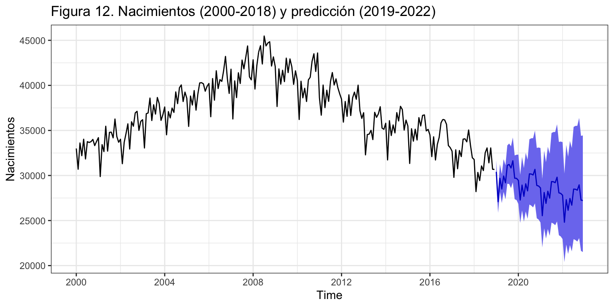
Claramente hay autocorrelaciones significativas, pero en retardos no relevantes (véase figura 11). El error muestra ser homocedástico y seguir una distribución normal.
Interpretación
El modelo teórico es \(log(nacimientos) \sim ARIMA_{12}(0, 1, 1)(0, 1, 1) + AI\), \[(1 - L^{12})(1 - L)\log(nacimientos_t) = (1 + \theta_1 L)(1 + \theta_{12} L^{12})\varepsilon_t + AI.\] Si sustituimos \((1 - L^{12})\log(nacimientos_t)\) por \(TVA_{nacimientos_t}\), la tasa de variación anual de los nacimientos, y desarrollamos queda \[TVA_{nacimientos_t} = TVA_{nacimientos_{t-1}} + \theta_1 \varepsilon_{t-1} + \theta_{12} \varepsilon_{t-12} + \theta_1\theta_{12} \varepsilon_{t-13} + \varepsilon_{t}+\] \[\gamma_1 \cdot DiasMes_t + \gamma_2 \cdot SemanaSanta +\gamma_3 \cdot d1206_t + \gamma_4 \cdot d1210_t +\gamma_5 \cdot d0111_t + \gamma_6 \cdot d0416_t + \gamma_7 \cdot d0616_t.\]
Finalmente, el modelo estimado es, \[\widehat{TVA}_{nacimientos_{t}} = TVA_{nacimientos_{t-1}} - 0.46\varepsilon_{t-1} - 0.75\varepsilon_{t-12} + 0.35\varepsilon_{t-13} + \] \[0.032 \cdot DiasMes_t - 0.022 \cdot SemanaSanta - 0.047 \cdot d1206_t + 0.06 \cdot d1210_t - 0.056 \cdot d0111_t - 0.051 \cdot d0416_t + 0.027 \cdot d0616_t.\]
En cada mes, la tasa de variación anual de los nacimientos es la misma que la del mes pasado (\(\widehat{TVA}_{nacimientos_t} = TVA_{nacimientos_{t-1}}\)).
Además, si algunos de los meses necesarios para predecir fue anómalo, el error hay que tenerlo en cuenta para afinar la previsión.
Respecto de la intervención, cada día adicional de un mes nacen un 3.2% más bebés. El mes en que cae la Semana Santa los nacimientos caen un 2.2%. Por alguna razón, en diciembre de 2006 hubo un 4.7% menos de nacimientos de lo esperado; en diciembre de 2010 hubo un 6% más de nacimientos de lo esperado; en enero de 2011 hubo un 5.6% menos de nacimientos de lo esperado; en abril de 2016 hubo un 5.1% menos de nacimientos de lo esperado.; y en junio de 2016 hubo un 2.7% más de nacimientos de lo esperado.
Predicción de la serie
Una vez dado por válido el modelo podemos pasar a realizar predicciones. Hay que tener en cuenta que hay siete variables de intervención, dos de ellas son efectos calendario (DiasMes y SemanaSanta), para las que debemos indicar qué valores tomarán en el periodo de predicción. Vamos a fijar el horizonte de predicción en cuatro años y mostrar los resultados numérica (solo para el primer año) y gráficamente (figura 12).
pdm <- 1* monthdays(ts(rep(0, 48), start = 2019, freq = 12))
pss <- 1* easter(ts(rep(0, 48), start = 2019, freq = 12))
pnac.ar2 <- forecast(nac.ar2,
h = 48,
xreg = cbind(pdm, pss, rep(0,48), rep(0,48), rep(0,48), rep(0,48), rep(0,48)),
level = 95)
pnac.ar2 Point Forecast Lo 95 Hi 95
Jan 2019 30416.36 29250.02 31629.22
Feb 2019 29959.22 28658.37 31319.13
Mar 2019 30151.93 28706.76 31669.86
Apr 2019 30106.15 28539.95 31758.31
May 2019 29982.55 28309.71 31754.24
Jun 2019 30233.94 28440.89 32140.03
Jul 2019 31226.31 29271.42 33311.76
Aug 2019 31243.97 29190.58 33441.81
Sep 2019 32048.24 29847.06 34411.74
Oct 2019 31726.73 29457.97 34170.23
Nov 2019 30831.93 28543.69 33303.61
Dec 2019 29644.82 27367.59 32111.54autoplot(pnac.ar2,
ylab = 'Nacimientos',
main = 'Figura 12. Nacimientos (2000-2018) y predicción (2019-2022)') +
scale_x_continuous(breaks= seq(2000, 2022, 4)) 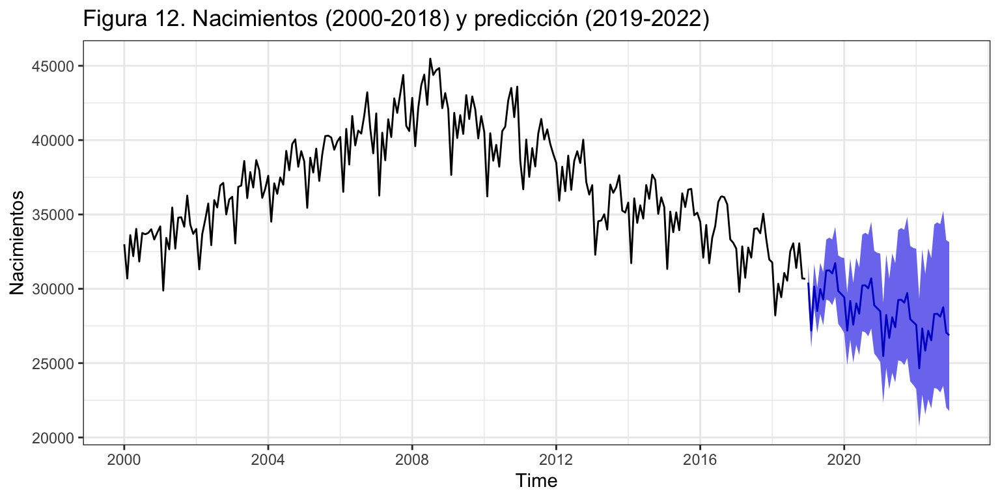
Error de predicción extra-muestral según horizonte temporal
Asumimos que se precisan diez años para hacer una buena estimación, \(k = 120\), y fijaremos el horizonte temporal en un año, \(h = 12\) meses.
k <- 120
h <- 12
T <- length(nacimientos)
s<-T - k - h
mapeArima <- matrix(NA, s + 1, h)
X <- cbind(DiasMes, SemanaSanta, d1206, d1210, d0111, d0416, d0616)
for (i in 0:s) {
train.set <- subset(nacimientos, start = i + 1, end = i + k)
test.set <- subset(nacimientos, start = i + k + 1, end = i + k + h)
X.train <- X[(i + 1):(i + k),]
hay <- colSums(X.train)
X.train <- X.train[, hay>0]
X.test <- X[(i + k + 1):(i + k + h),]
X.test <- X.test[, hay>0]
fit <- Arima(train.set,
order = c(0, 1, 1),
seasonal = c(0, 1, 1),
lambda = 0,
xreg = X.train)
fcast <- forecast(fit, h = h, xreg = X.test)
mapeArima[i + 1,] <- 100*abs(test.set - fcast$mean)/test.set
}
errorArima <- colMeans(mapeArima)
errorArima [1] 1.894985 2.110367 2.256633 2.655027 2.691905 2.750383 2.902887 2.902539
[9] 3.016537 3.217432 3.381909 3.534072ggplot() +
geom_line(aes(x = 1:12, y = errorArima), colour = "Blue") +
ggtitle("Figura 13. Error de predicción (MAPE) según horizonte temporal") +
xlab("Horizonte temporal de predicción") +
ylab("%") +
scale_x_continuous(breaks= 1:12)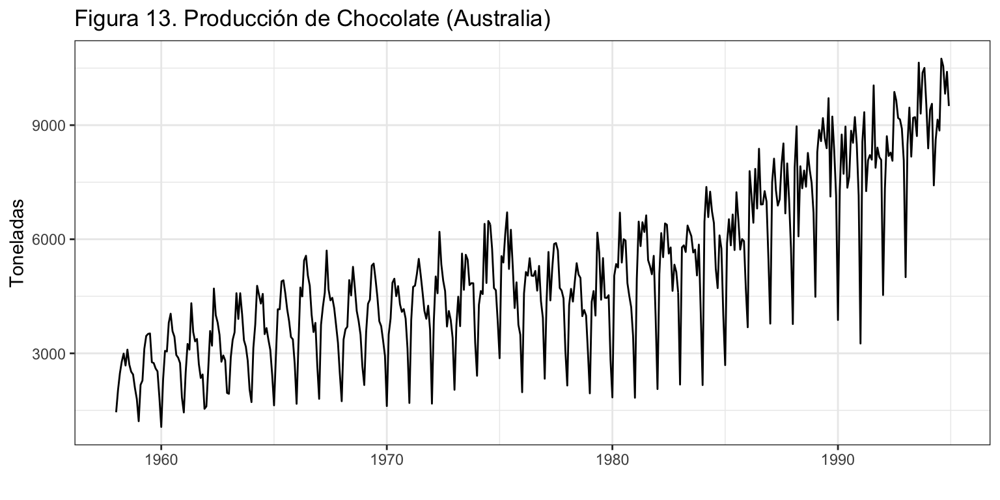
La figura 13 revela que el error de predicción aumenta de forma regular según aumenta el horizonte de predicción, pero incluso a un año vista, se mantiene bajo.
3.2 Chocolate
Vamos a aplicar la metodología de Box-Jenkins a la serie mensual de producción de chocolate en Australia desde enero de 1958 hasta diciembre de 1994, 444 meses.
chocolate <- read.csv2("./series/Chocolate.csv", header = TRUE)
chocolate <- ts(chocolate, start = 1958, freq = 12)
autoplot(chocolate,
xlab = "",
ylab = "Toneladas",
main = "Figura 14. Producción de Chocolate (Australia)")
La producción de chocolate presenta una tendencia creciente, especialmente desde los años 80 del siglo pasado, una marcada componente estacional (donde la máxima producción se da en el invierno austral, meses de mayo a agosto, y la menor producción en enero), combinados en un esquema multiplicativo. Trabajaremos con el logaritmo de la serie para linealizar las componentes y reducir la posible heterocedasticidad.
Transformación de la serie
La figura 15 muestra que solo la doble diferenciación regular y estacional consigue que la transformación logarítmica de Chocolate sea estacionaria y ergódica.
ggAcf(log(chocolate), lag = 48,
xlab = "", ylab = "d = D = 0", main = "Figura 14. FAC")
ggAcf(diff(log(chocolate)), lag = 48,
xlab = "", ylab = "d = 1 - D = 0", main = "")
ggAcf(diff(log(chocolate), lag = 12), lag = 48,
xlab = "", ylab = "d = 0 - D = 1", main = "")
ggAcf(diff(diff(log(chocolate), lag = 12)), lag = 48,
xlab = "", ylab = "d = 1 - D = 1", main = "")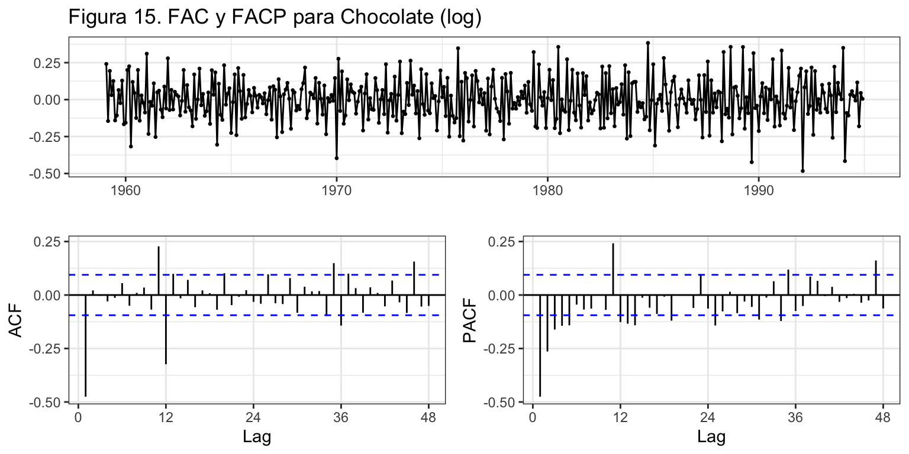
Estos resultados son confirmados a través de las funciones ndiffs y nsdiffs
ndiffs(log(chocolate))[1] 1nsdiffs(log(chocolate))[1] 1Podemos concluir que \(d = 1\) y \(D = 1\) o \(\log(chocolate_t) \sim I(1)I_{12}(1)\).
Identificación
Tras transformar la serie, vamos a identificar los valores de \(p\), \(q\), \(P\) y \(Q\) a partir de FAC y FACP de la serie doblemente diferenciada.
ggtsdisplay(diff(diff(log(chocolate), lag = 12)), lag = 48,
main = "Figura 16. FAC y FACP para Chocolate (log)")Analizando la FAC y FACP (figura 15), tenemos que:
- FAC: un pico en la parte regular y decrecimiento en la estacional.
- FACP: decrecimiento en la parte regular y estacional.
Parece ser un ARIMA(0, 1, 1)(1, 1, 1).
¿Qué nos indica auto.arima? Para ayudar a esta función lo máximo posible vamos a definir una variable de intervención que pueden ser relevante:
- Días laborables: al tratarse de datos de producción, el número de días laborables de cada mes puede ser un determinante del valor de la serie. Entenderemos por días laborables los lunes a viernes de cada mes, menos los días festivos. Este valor se puede obtener con la función
bizdays. Un inconveniente de esta función, es que su valor depende de los festivos de cada país. Por ejemplo, en Australia el día del trabajador se celebra el primer lunes de octubre y en España el 1 de noviembre. Por proximidad cultural, histórica y política, usaremos el calendario de Londres para Australia. (Rpermite crear tu propio calendario de festivos y existen otras librerías que extienden las opciones debizdays.)
bizdays(chocolate, FinCenter = "London") Jan Feb Mar Apr May Jun Jul Aug Sep Oct Nov Dec
1958 23 20 21 20 21 21 23 20 22 23 20 21
1959 22 20 20 22 20 22 23 20 22 22 21 22
1960 21 21 23 19 22 21 21 22 22 21 22 21
1961 22 20 22 19 22 22 21 22 21 22 22 19
1962 23 20 22 19 23 20 22 22 20 23 22 19Vamos a crear esta variable y a incluirla en la auto-identificación.
# Efecto año días laborables
DiasLaborables <- bizdays(chocolate, FinCenter = "London")
auto.arima(chocolate, d = 1, D = 1,
lambda = 0,
xreg = DiasLaborables)Series: chocolate
Regression with ARIMA(1,1,1)(0,1,2)[12] errors
Box Cox transformation: lambda= 0
Coefficients:
ar1 ma1 sma1 sma2 xreg
0.3032 -0.9078 -0.6174 -0.0922 0.0339
s.e. 0.0619 0.0326 0.0501 0.0487 0.0040
sigma^2 estimated as 0.009433: log likelihood=391.34
AIC=-770.68 AICc=-770.48 BIC=-746.28Indica \(ARIMA_{12}(1,1,1)(0,1,2)\), donde el parámetro \(\theta_{24}\) no está claro si es significativo. Además, hay un efecto días laborables significativo.
Por último, la función seas (también con un poco de ayuda) identifica un proceso similar \(ARIMA_{12}(1,1,1)(0,1,1)\), con un efecto Semana Santa, (de quince días) un efecto día de la semana y un efecto año bisiesto, que globalmente se asemejan al efecto días laborables.
summary(seas(diff(diff(log(chocolate), lag = 12))))
Call:
seas(x = diff(diff(log(chocolate), lag = 12)))
Coefficients:
Estimate Std. Error z value Pr(>|z|)
Leap Year 0.037906 0.031418 1.207 0.227622
Mon 0.021718 0.017931 1.211 0.225819
Tue 0.007760 0.018019 0.431 0.666733
Wed 0.025674 0.018144 1.415 0.157080
Thu -0.002852 0.018096 -0.158 0.874763
Fri -0.015197 0.018124 -0.838 0.401771
Sat -0.063503 0.018205 -3.488 0.000486 ***
Easter[15] -0.095747 0.045962 -2.083 0.037234 *
AR-Nonseasonal-01 0.226982 0.056597 4.010 0.0000606 ***
MA-Nonseasonal-01 0.879176 0.027636 31.812 < 0.0000000000000002 ***
MA-Seasonal-12 0.650157 0.040017 16.247 < 0.0000000000000002 ***
---
Signif. codes: 0 '***' 0.001 '**' 0.01 '*' 0.05 '.' 0.1 ' ' 1
SEATS adj. ARIMA: (1 0 1)(0 0 1) Obs.: 431 Transform: none
AICc: -737.6, BIC: -689.5 QS (no seasonality in final): 0
Box-Ljung (no autocorr.): 16.86 Shapiro (normality): 0.9879 ***
Messages generated by X-13:
Warnings:
- Automatic transformation selection cannot be done on a series
with zero or negative values.
- At least one visually significant seasonal peak has been found
in one or more of the estimated spectra.
- Series should not be a candidate for seasonal adjustment
because the spectrum of the prior adjusted series (Table B1)
has no visually significant seasonal peaks.Aparentemente ambas funciones identifican el mismo modelo, si del modelo identificado con auto.arima excluimos el parámetro no significativo. Te en cuenta que los días laborables ya descuentan el efecto de la Semana Santa, así que no es necesario incluir el efecto Semana Santa de forma independiente.
Estimación
Vamos a realizar la primera estimación.
choco.ar1 <- Arima(chocolate, order=c(1, 1, 1),
seasonal = c(0, 1, 1),
lambda = 0,
xreg = DiasLaborables)
choco.ar1Series: chocolate
Regression with ARIMA(1,1,1)(0,1,1)[12] errors
Box Cox transformation: lambda= 0
Coefficients:
ar1 ma1 sma1 xreg
0.2844 -0.8972 -0.6718 0.0339
s.e. 0.0620 0.0333 0.0462 0.0038
sigma^2 estimated as 0.009501: log likelihood=389.55
AIC=-769.1 AICc=-768.96 BIC=-748.77Ya tenemos un modelo de partida, veamos si es necesaria más intervención.
error <- residuals(choco.ar1)
sderror <- sd(error)
autoplot(error, series="Error",
colour = "black",
xlab = "",
ylab = "Error",
main = "Figura 17. Error + Intervención") +
geom_hline(yintercept = c(-3, -2, 2, 3)*sderror,
colour = c("red", "green", "green", "red"),
lty = 2) +
scale_x_continuous(breaks= seq(1958, 1994, 2)) Se observan tres valores claramente atípicos en enero de 1986, 1991 y 1994. Además, hay otro candidatos a valor extremo, por superar las 2.5 desviaciones típicas, en septiembre de 1975. Por tanto,
- Se crea una variable de intervención para cada caso
- Se estima de nuevo el modelo incluyendo estas variables
- Se vuelve a analizar si quedan valores atípicos
d0975 <- 1*(cycle(chocolate) == 9 & trunc(time(chocolate)) == 1975)
d0186 <- 1*(cycle(chocolate) == 1 & trunc(time(chocolate)) == 1986)
d0191 <- 1*(cycle(chocolate) == 1 & trunc(time(chocolate)) == 1991)
d0194 <- 1*(cycle(chocolate) == 1 & trunc(time(chocolate)) == 1994)
choco.ar2 <- Arima(chocolate, order=c(1, 1, 1),
seasonal = c(0, 1, 1),
lambda = 0,
xreg = cbind(DiasLaborables, d0975, d0186, d0191, d0194))
choco.ar2Series: chocolate
Regression with ARIMA(1,1,1)(0,1,1)[12] errors
Box Cox transformation: lambda= 0
Coefficients:
ar1 ma1 sma1 DiasLaborables d0975 d0186 d0191
0.3052 -0.8889 -0.6778 0.0363 -0.1630 0.1291 -0.3385
s.e. 0.0646 0.0355 0.0413 0.0035 0.0753 0.0755 0.0769
d0194
0.5128
s.e. 0.0838
sigma^2 estimated as 0.008197: log likelihood=423.4
AIC=-828.8 AICc=-828.37 BIC=-792.2Ahora debemos volver a verificar si en el nuevo modelo hay valores extremos. Observamos que no hay.
error <- residuals(choco.ar2)
sderror <- sd(error)
autoplot(error, series="Error",
colour = "black",
xlab = "",
ylab = "Error",
main = "Figura 18. Error + Intervención") +
geom_hline(yintercept = c(-3, -2, 2, 3)*sderror,
colour = c("red", "green", "green", "red"),
lty = 2) +
scale_x_continuous(breaks= seq(1958, 1994, 2)) 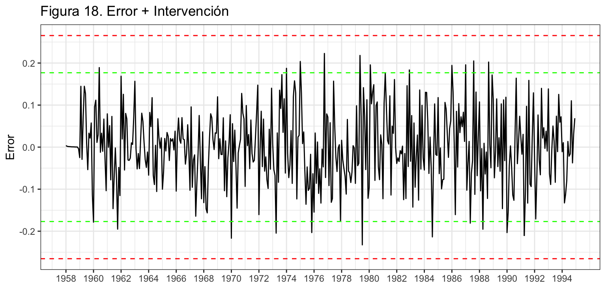 Por último, veamos si todos los coeficientes del modelo son significativos. Aunque uno de ellos (enero 1986) no lo es al 5%, si lo es al 10% así que optamos por dejarlo.
ancho <- max(nchar(names(coef(choco.ar2)))) + 2
for(i in 1:length(coef(choco.ar2))) {
wt <- wald.test(b = coef(choco.ar2),
Sigma = vcov(choco.ar2),
Terms = i)
cat("\nCoeficiente: ", format(names(coef(choco.ar2))[i], width = ancho), "valor de p: ",
formatC(wt$result$chi2[3], digits = 4, format = "f"))
}
Coeficiente: ar1 valor de p: 0.0000
Coeficiente: ma1 valor de p: 0.0000
Coeficiente: sma1 valor de p: 0.0000
Coeficiente: DiasLaborables valor de p: 0.0000
Coeficiente: d0975 valor de p: 0.0303
Coeficiente: d0186 valor de p: 0.0874
Coeficiente: d0191 valor de p: 0.0000
Coeficiente: d0194 valor de p: 0.0000Validación
Analizando los criterios de bondad de ajuste se tiene que: el error medio es 3, prácticamente cero, por lo que no parece que haya sesgo en las predicciones; en media nos equivocamos en 488 toneladas (RMSE); y el error porcentual medio es 7%, razonable.
accuracy(choco.ar2) ME RMSE MAE MPE MAPE MASE ACF1
Training set 3 488.05 360.71 -0.33 6.99 0.69 -0.05
Incorrelación, Homocedasticidad y Normalidad
Veamos ahora si el residuo es ruido blanco.
Box.test(error, lag = 2,type = "Ljung-Box")
Box-Ljung test
data: error
X-squared = 3.8081, df = 2, p-value = 0.149Box.test(error, lag = 24,type = "Ljung-Box")
Box-Ljung test
data: error
X-squared = 27.763, df = 24, p-value = 0.2701Box.test(error^2, lag = 2, type = "Ljung-Box")
Box-Ljung test
data: error^2
X-squared = 0.077789, df = 2, p-value = 0.9619Box.test(error^2, lag = 24, type = "Ljung-Box")
Box-Ljung test
data: error^2
X-squared = 29.658, df = 24, p-value = 0.1964jarque.bera.test(error)
Jarque Bera Test
data: error
X-squared = 1.0924, df = 2, p-value = 0.5791El error muestra ser incorrelado, homocedástico y seguir una distribución normal.
Interpretación
El modelo teórico es \(log(chocolate) \sim ARIMA_{12}(1, 1, 1)(0, 1, 1) + AI\), \[(1 - \phi_1 L)(1 - L^{12})(1 - L)\log(chocolate_t) = (1 + \theta_1 L)(1 + \theta_{12} L^{12})\varepsilon_t + AI.\] Si sustituimos \((1 - L^{12})\log(chocolate_t)\) por \(TVA_{chocolate_t}\), desarrollamos el modelo y sustituimos los parámetros por sus estimaciones, queda \[\widehat{TVA}_{chocolate_t} = TVA_{chocolate_{t-1}} + 0.31(TVA_{chocolate_{t-1}} - TVA_{chocolate_{t-2}})\] \[- 0.89\varepsilon_{t-1} - 0.68\varepsilon_{t-12} + 0.60\varepsilon_{t-13}\] \[+0.036\cdot DiasLaborables - 0.16\cdot d0975 + 0.13 \cdot d0186-0.34 \cdot d0191 + 0.51\cdot d0194.\] Por tanto:
- La tasa de variación anual en la producción de chocolate para un mes es la misma que la del mes pasado más un 31% del último incremento observado.
- Si en los meses pasados el valor esperado en la tasa de variación se alejó de la real, hay que tenerlo en cuenta para corregir las previsiones.
- Cada día laborable adicional en un mes supone un incremento del 3.6% en la producción.
- En determinados meses hubo unos valores de producción muy alejados de los esperado.
Predicción de la serie
Una vez dado por válido el modelo podemos pasar a realizar predicciones. Hay que tener en cuenta que hay una variable de intervención de efecto calendario (Días laborables), para la que debemos indicar qué valores tomará en el periodo de predicción. Vamos a fijar el horizonte de predicción en cuatro años (1995 a 1998).
dummy <- ts(rep(0, 48), start = 1995, frequency = 12)
pdl <- bizdays(dummy, FinCenter = "London")
pchoco.ar2 <- forecast(choco.ar2,
h = 48,
xreg = cbind(pdl, rep(0,48), rep(0,48), rep(0,48), rep(0,48)),
level = 95)
autoplot(pchoco.ar2,
xlab = "",
ylab = 'Toneladas',
main = 'Figura 19. Chocolate (1958-1994) y predicción (1995-1998)') +
scale_x_continuous(breaks= seq(1958, 1998, 4)) 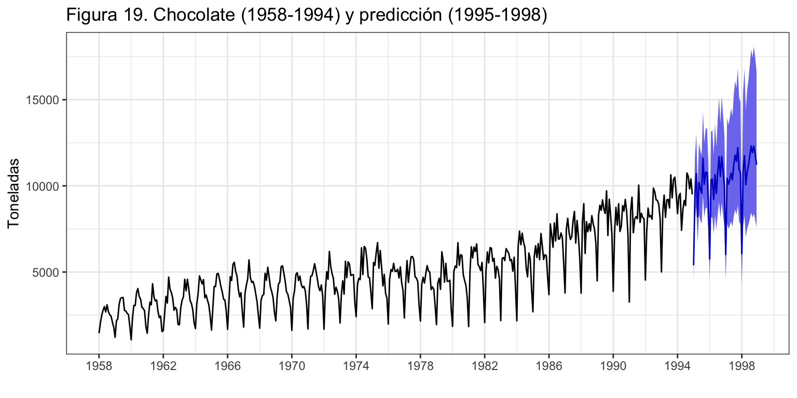
Error de predicción extra-muestral según horizonte temporal
Asumimos que se precisan veinte años para hacer una buena estimación, \(k = 240\), y fijaremos el horizonte temporal en un año, \(h = 12\) meses.
k <- 240
h <- 12
T <- length(chocolate)
s<-T - k - h
mapeArima <- matrix(NA, s + 1, h)
X <- data.frame(cbind(DiasLaborables, d0975, d0186, d0191, d0194))
for (i in 0:s) {
train.set <- subset(chocolate, start = i + 1, end = i + k)
test.set <- subset(chocolate, start = i + k + 1, end = i + k + h)
X.train <- data.frame(X[(i + 1):(i + k),])
hay <- colSums(X.train)
X.train <- X.train[, hay>0]
X.test <- data.frame(X[(i + k + 1):(i + k + h),])
X.test <- X.test[, hay>0]
fit <- Arima(train.set,
order = c(1, 1, 1),
seasonal = list(order = c(0, 1, 1), period = 12),
lambda = 0,
xreg = as.matrix(X.train))
fcast <- forecast(fit, h = h, xreg = as.matrix(X.test))
mapeArima[i + 1,] <- 100*abs(test.set - fcast$mean)/test.set
}
errorArima <- colMeans(mapeArima)
errorArima [1] 8.377471 8.600894 8.872539 9.262283 9.405912 9.251936 9.321219 9.354090
[9] 9.070492 9.241635 9.157093 9.303983ggplot() +
geom_line(aes(x = 1:12, y = errorArima), colour = "Blue") +
ggtitle("Figura 20. Error de predicción (MAPE) según horizonte temporal") +
xlab("Horizonte temporal de predicción") +
ylab("%") +
scale_x_continuous(breaks= 1:12)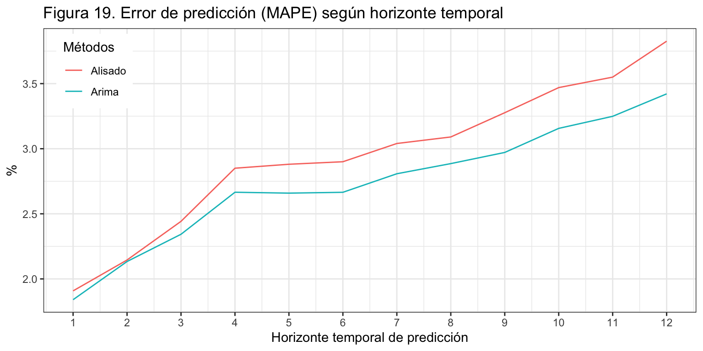
La figura 20 revela que el error de predicción a un periodo vista es 1.4 puntos porcentuales superior al error de ajuste. Hasta los 5 meses el error aumenta según aumenta el horizonte de predicción. Desde el sexto mes, el error se mantiene estable en torno al 9%-9.4%.
4 Comparación con alisado exponencial
Veamos una comparativa, para los dos ejemplos vistos, entre los resultados obtenidos con ARIMA y con Alisado exponencial
Nacimientos (log)
| Método | Modelo | MAPE | |||
|---|---|---|---|---|---|
| Ajuste | Extra h = 1 | Extra h = 6 | Extra h = 12 | ||
| ARIMA | ARIMA(0,1,1)(0,1,2) + AI | 1.55 | 1.90 | 2.77 | 3.60 |
| Alisado | ETS(A,Ad,A) | 1.75 | 1.91 | 2.90 | 3.83 |
Para Nacimientos, la mejora en los indicadores de calidad con ARIMA respecto de Alisado es tan pequeña que no justifica su aplicación. Incluso para previsiones extra-muestrales a 12 meses vista, Alisado sólo es inferior en medio punto porcentual a ARIMA.
Chocolate (log)
| Método | Modelo | MAPE | |||
|---|---|---|---|---|---|
| Ajuste | Extra h = 1 | Extra h = 6 | Extra h = 12 | ||
| ARIMA | ARIMA(1,1,1)(0,1,1) + AI | 6.99 | 8.38 | 9.25 | 9.30 |
| Alisado | ETS(A,A,A) | 8.15 | 9.36 | 11.07 | 9.39 |
En el caso de Chocolate, la mejora en la calidad del ajuste con ARIMA respecto de Alisado es de 1 a 2 puntos porcentuales en previsiones a unos pocos meses vista. Sin embargo, a doce meses vista ambos métodos ofrecen igual calidad en sus predicciones.